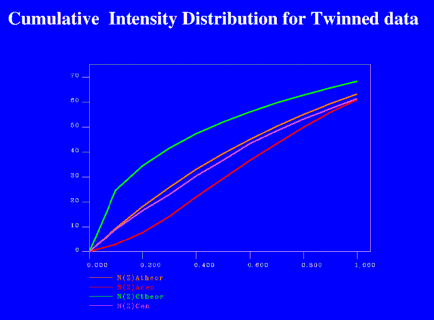

PLEASE NOTE: Most of this document has been taken directly from chapter 6 of the SHELX-97 Manual.
A typical definition of a twinned crystal is the following: "Twins are regular
aggregates consisting of crystals of the same species joined together in some definite
mutual orientation" (Giacovazzo, 1992). For this to happen two lattice repeats in the
crystal must be of equal length to allow the array of unit cells to pack compactly.
The result is that the reciprocal lattice diffracted from each component will overlap,
and instead of measuring only Ihkl from a single crystal, the experiment
yields
km Ihkl(crystal1) +
(1-km) Ih'k'l'(crystal2)
For a description of a twin it is necessary to know the matrix that transforms the hkl indices of one crystal into the h'k'l' of the other, and the value of the fractional component km. Those space groups where it is possible to index the cell along different axes are also very prone to twinning.
When the diffraction patterns from the different domains are completely superimposable, the twinning is termed merohedral. The special case of just two distinct domains (typical for macromolecules) is termed hemihedral. When the reciprocal lattices do not superimpose exactly, the diffraction pattern consists of two (or more) interpenetrating lattices, which can in principle be separated. This is termed non-merohedral or epitaxial twinning.
Experience shows that there are a number of characteristic warning signs for twinning. Of course not all of them can be present in any particular example, but if one finds several of them, the possibility of twinning should be given serious consideration.
The following points are typical for non-merohedral twins, where the reciprocal lattices do not overlap exactly and only some of the reflections are affected by the twinning:
Example of a cumulative intensity distribution with twinning present, as plotted by TRUNCATE. (A full size version of the example can be viewed by clicking on the small picture.)
|  | Cumulative intensity distribution for twin |
The following cases are relatively common:
A crystal is a 3-dimensional translational repeat of a structural pattern which may comprise a molecule, part of a symmetric molecule, or several molecules. The repeats which can overlap by simple translation, are called unit cells.
Lattice symmetry enforces extra limitations. There are 7 basic symmetry classes possible within a crystal:
Problems arise most commonly when two or more crystal axes are the same length, either by accident in the monoclinic and orthorhombic system, or as a requirement of the symmetry as in the tetragonal, trigonal, hexagonal or cubic systems.
Although the a and b axes in the tetragonal, trigonal, hexagonal and cubic classes must be equal in length, there can still be ambiguities in their definition, and consequentially in the indexing of the diffraction pattern. It is these classes of crystals which are most prone to twinning.
It is possible that in P21 or C2 there are two possible choices of a with anew = aold + ncold. If the magnitude of a is equal to that of a+nc, the cos rule requires that cos(Beta*) = |nc|/2|a|, or, if |a|>|c|, cos(Beta*) = |na|/2|c|.
For orthorhombic crystal forms the only possibility for twinning is if there are two axes with nearly the same length.
For tetragonal, trigonal, hexagonal or cubic systems it is a requirement of the symmetry that two cell axes are equal. Assuming the lengths of a and b to be equal, and maintaining a right-handed axial system, we find:
| For these spacegroups the real axial system could be: | (a,b,c) | or | (-a,-b,c) | or | (b,a,-c) | or | (-b,-a,-c) |
| with corresponding reciprocal axes: | (a*,b*,c*) | or | (-a*,-b*,c*) | or | (b*,a*,-c*) | or | (-b*,-a*,-c*) |
| Corresponding indexing systems: | (h,k,l) | or | (-h,-k,l) | or | (k,h,-l) | or | (-k,-h,-l) |
In these cases, any of the above definitions of axes is equally valid. For many cases the alternative systems are symmetry equivalents, and hence do not generate detectable differences in the diffraction pattern. But for crystals where this is not true, twinning is possible. Different domains may have different definitions of axes, which lead to different diffraction intensities superimposed on the same lattice.
Here are details for the possible systems. These tables are generated by considering each of the indexing systems above, and eliminating those which correspond to symmetry operators of the spacegroup. While twinning involves more than one indexing possibility within a single dataset, these operators are also relevant for ensuring the same indexing between multiple datasets when there is no twinning.
| real axes: | (a,b,c) | and | (b,a,-c) |
| reciprocal axes: | (a*,b*,c*) | and | (b*,a*,-c*) |
| space group number | space group | point group | possible twin operator |
|---|---|---|---|
| 75 | P4 | PG4 | k,h,-l |
| 76 | P41 | PG4 | k,h,-l |
| 77 | P42 | PG4 | k,h,-l |
| 78 | P43 | PG4 | k,h,-l |
| 79 | I4 | PG4 | k,h,-l |
| 80 | I41 | PG4 | k,h,-l |
| space group number | space group | point group | no twin operators |
|---|---|---|---|
| 89 | P422 | PG422 | none |
| 90 | P4212 | PG422 | none |
| 91 | P4122 | PG422 | none |
| 92 | P41212 | PG422 | none |
| 93 | P4222 | PG422 | none |
| 94 | P42212 | PG422 | none |
| 95 | P4322 | PG422 | none |
| 96 | P43212 | PG422 | none |
| 97 | I422 | PG422 | none |
| 98 | I4122 | PG422 | none |
| real axes: | (a,b,c) | and | (-a,-b,c) | and | (b,a,-c) | and | (-b,-a,c) |
| reciprocal axes: | (a*,b*,c*) | and | (-a*,-b*,c*) | and | (b*,a*,-c*) | and | (-b*,-a*,c*) |
For H3 the indices must satisfy the relationship -h +k+l =3n so it is only possible to reindex as ( k, h,-l). Note that the latter is a symmetry operator of H32, so that twinning is not possible in H32. However, twinning in H3 may give apparent H32 symmetry.
For trigonal space groups, symmetry equivalents do not seem as "natural" as in other systems. Replacing the 4 basic sets with other symmetry equivalents gives a bewildering range of apparent possibilities, but all are equivalent to one of the above.
Two-fold twinning possible with this operator - apparent Laue symmetry for two fold perfect twin could be P321 (operator k,h,-l) or P312 (operator -k,-h,-l) or P6 (operator -h,-k,l) Four-fold twinning with these operators could generate apparent Laue symmetry of P622
| space group number | space group | point group | possible twin operators |
|---|---|---|---|
| 143 | P3 | PG3 | -h,-k,l; k,h,-l; -k,-h,-l |
| 144 | P31 | PG3 | -h,-k,l; k,h,-l; -k,-h,-l |
| 145 | P32 | PG3 | -h,-k,l; k,h,-l; -k,-h,-l |
| 146 | H3 | PG3 | k,h,-l |
| real axes: | (a,b,c) | and | (b,a,-c) |
| reciprocal axes: | (a*,b*,c*) | and | (b*,a*,-c*) |
| space group number | space group | point group | possible twinning operator |
|---|---|---|---|
| 149 | P312 | PG312 | -h,-k,l or k,h,-l |
| 151 | P3112 | PG312 | -h,-k,l or k,h,-l |
| 153 | P3212 | PG312 | -h,-k,l or k,h,-l |
| real axes: | (a,b,c) | and | (-a,-b,-c) |
| reciprocal axes: | (a*,b*,c*) | and | (-a*,-b*,-c*) |
| space group number | space group | point group | possible twinning operator |
|---|---|---|---|
| 150 | P321 | PG321 | -h,-k,l or -k,-h,-l |
| 152 | P3121 | PG321 | -h,-k,l or -k,-h,-l |
| 154 | P3221 | PG321 | -h,-k,l or -k,-h,-l |
| real axes: | (a,b,c) | and | (b,a,-c) |
| reciprocal axes: | (a*,b*,c*) | and | (b*,a*,-c*) |
| space group number | space group | point group | possible twinning operator |
|---|---|---|---|
| 168 | P6 | PG6 | k,h,-l |
| 169 | P61 | PG6 | k,h,-l |
| 170 | P65 | PG6 | k,h,-l |
| 171 | P62 | PG6 | k,h,-l |
| 172 | P64 | PG6 | k,h,-l |
| 173 | P63 | PG6 | k,h,-l |
| space group number | space group | point group | no twinning operator |
|---|---|---|---|
| 177 | P622 | PG622 | none |
| 178 | P6122 | PG622 | none |
| 179 | P6522 | PG622 | none |
| 180 | P6222 | PG622 | none |
| 181 | P6422 | PG622 | none |
| 182 | P6322 | PG622 | none |
| real axes: | (a,b,c) | and | (b,a,-c) |
| reciprocal axes: | (a*,b*,c*) | and | (b*,a*,-c*) |
| space group number | space group | point group | possible twinning operator |
|---|---|---|---|
| 195 | P23 | PG23 | k,h,-l |
| 196 | F23 | PG23 | k,h,-l |
| 197 | I23 | PG23 | k,h,-l |
| 198 | P213 | PG23 | k,h,-l |
| 199 | I213 | PG23 | k,h,-l |
| space group number | space group | point group | no twinning operator |
|---|---|---|---|
| 207 | P432 | PG432 | none |
| 208 | P4232 | PG432 | none |
| 209 | F432 | PG432 | none |
| 210 | F4132 | PG432 | none |
| 211 | I432 | PG432 | none |
| 212 | P4332 | PG432 | none |
| 213 | P4132 | PG432 | none |
| 214 | I4132 | PG432 | none |
More information on twinning can be found at: Fam and Yeates' Introduction to Hemihedral Twinning, which includes a Twinning test.
Acknowledgement in SHELX manual:
"I should like to thank Regine Herbst-Irmer
who wrote most of this chapter."
Prepared for CCP4 by Maria Turkenburg, University of York, England
{kind=link}